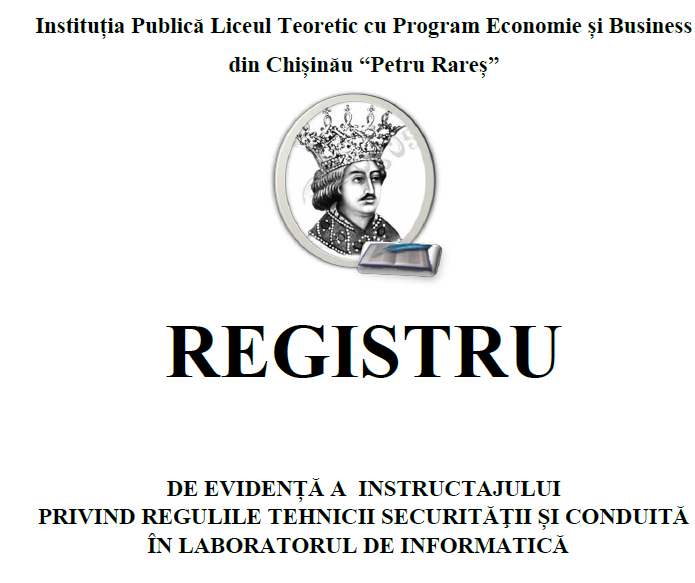

Activitatea de la catedră
Tehnica securității în cabinetul de informatică
Fiecare elev al claselor V-XII din anul şcolar 2021/2022, la IPLT ”Petru Rareș” conform registrului de evidență , va fi instruit cu privire la normele de securitate şi protecţie a muncii, pentru buna desfăşurare şi în condiţii de siguranţă, a orelor în laboratorul de informatică.
Lista de manuale electronice din Romania
- Informatica și TIC clasa 5
- Informatica și TIC clasa 5
- Informatica și TIC clasa 5
- Informatica și TIC clasa 5
- Informatica și TIC clasa 5
- Informatica și TIC clasa 5
- Informatica și TIC clasa 6
- Informatica și TIC clasa 6
- Informatica și TIC clasa 6
- Informatica și TIC clasa 7
- Informatica și TIC clasa 7
- Informatica și TIC clasa 7
- Infobits.ro
Literatură utilă pentru cadrul didactic
- http://aee.edu.md/
- http://www.cnaa.md/
- https://my.1sept.ru/festival/
- https://rosuchebnik.ru/
- https://www.yaklass.ru/
- https://www.yaklass.ru/
- https://www.pinterest.com/
- https://www.didactic.ro/resurse-educationale
- https://sites.google.com/site/ioanamagdas/modul-pedagogic---nivel-i---specializarea-informatica/didactica-informaticii